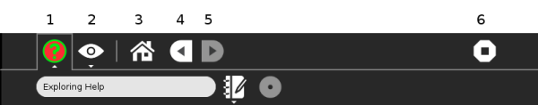

Writing in reStructuredText¶
This page is a short primer and cheat sheet for the markup language we are using in How to edit Help and contribute. The rst format is easy to create and we are using a part of it only.
Titles¶
====================
This is a main title
====================
This is a secondary title
-------------------------
This is a 3rd level title
:::::::::::::::::::::::::
Links¶
Links like http://activities.sugarlabs.org are automatically created.
To create links where the text displayed in the page is different to the link you should do:
You will find ASLO here.
Program writing software like Python.
Links like http://activities.sugarlabs.org are automatically created.
To create links where the text displayed in the page is different to the link you should do:
You will find `ASLO <http://activities.sugarlabs.org>`_ here.
Program writing software like Python_.
.. _Python: http://www.python.org/
Links within Help¶
This link, Titles links to the top paragraph of this document.
To see how this works,
.. _my-reference-label:appears on line 7 of restructuredtext.rst.
Secondly, this page contains more about terms and words used in sugar. Glossary
This link, :ref:`my-reference-label`, links to the top paragraph of this document.
To see how this works, ``.. _my-reference-label:`` appears on line 7 of restructuredtext.rst.
Secondly, this page contains more about terms and words used in sugar. :doc:`/glossary`
Lists¶
Lists are simple
First item
Second item
Last item
or numbered:
One item
Another item
The last one
Lists are simple
* First item
* Second item
* Last item
or numbered:
1. One item
2. Another item
3. The last one
Simple table¶
Inputs |
Output |
|
|---|---|---|
A |
B |
A or B |
False |
False |
False |
True |
False |
True |
False |
True |
True |
True |
True |
True |
===== ===== ======
Inputs Output
------------ ------
A B A or B
===== ===== ======
False False False
True False True
False True True
True True True
===== ===== ======
Images¶
An image can be included like this:

.. image :: ../images/Help.png
Icons and small images¶
 This is the sharing option.
This is the sharing option.
 This is the Private option.
This is the Private option.
|Neighborhood_key| This is the sharing option.
.. |Neighborhood_key| image:: ../images/Neighborhood_key_sml.png
|Home_key_f3_small| This is the Private option.
.. |Home_key_f3_small| image:: ../images/Home_key_f3_small.png
Adding a note¶
Note
When you are required to place the first readable character at point 3 or 4 in the line, it is recommended to check if you are required to insert spaces or Tab.
And also
See also
Notice that first readable character of this note is under the “s”, three spaces preceed it.
.. Note::
When you are required to place the first readable character at point 3 or 4 in the line, it is recommended to check if you are required to insert spaces or Tab.
And also
.. seealso::
Notice that first readable character of this note is under the "s", three spaces preceed it.
There are links to Further reading at the foot of the page How to edit Help and contribute